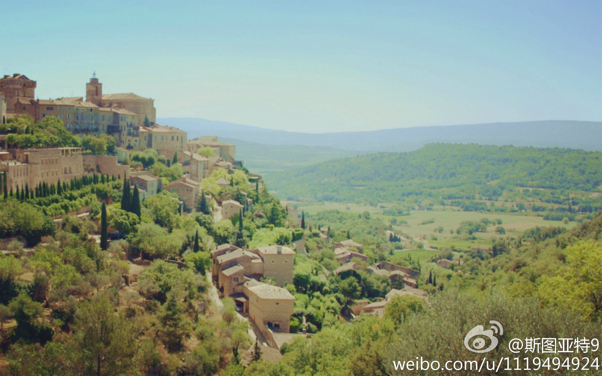
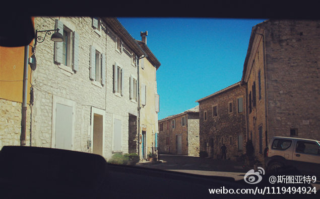
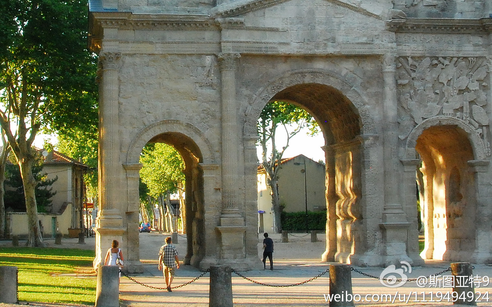
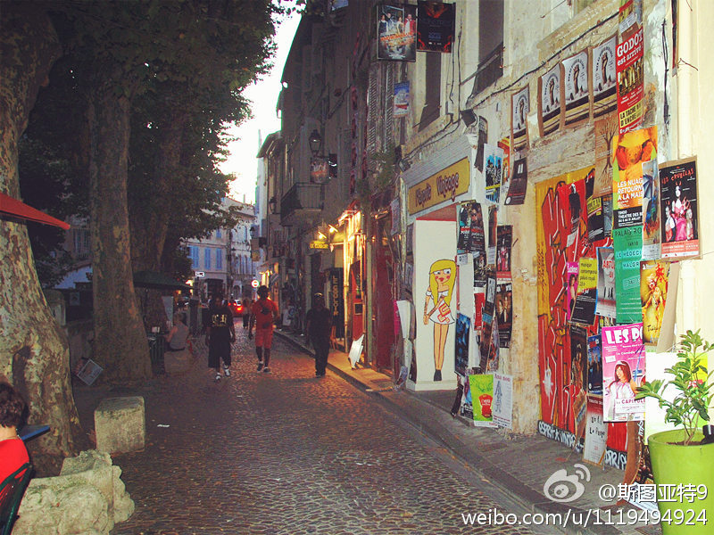
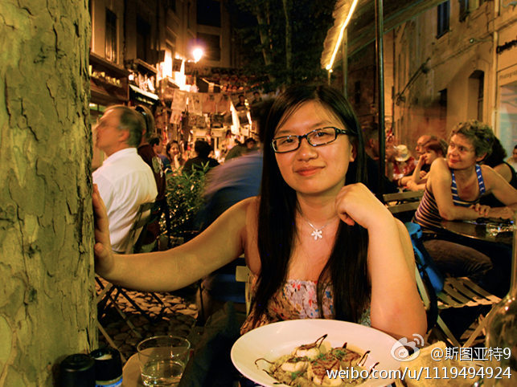
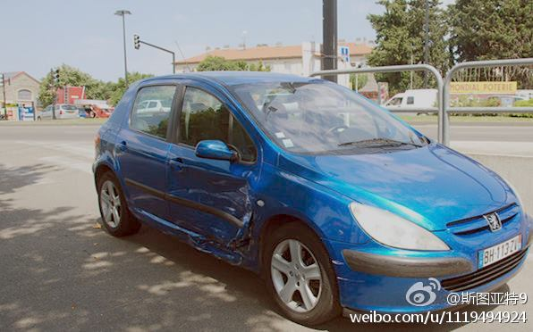
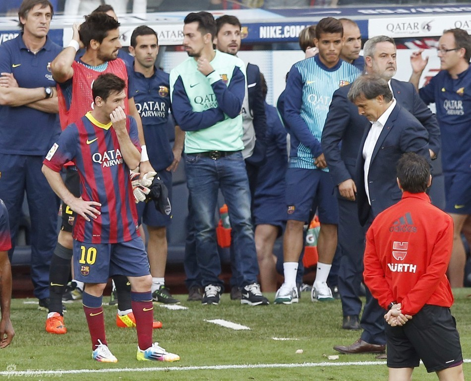

看《花儿与少年》，想起了唯一一次在欧洲开车。三年前在普罗旺斯租了一辆自动档车（昂贵）。第一天看了石头小镇、薰衣草、向日葵、修道院，还开到了Orange，晚上在小城Avignon热闹的街头转了转。第二天没开两个小时就撞车了，车被拖走维修结束自驾之旅。美图秀秀了几张照片，按湖南卫视的夸张手法。 
都是阿根廷教练，差距怎么这么大呢？或许是因为他们一起商量为了阿根廷队在世界杯上的成绩，让梅西多休息？@新浪体育:【巴萨主帅下课】巴萨主教练马蒂诺在新闻发布会上官方宣布，他和俱乐部一致决定，将不再担任巴萨主教练。详情：网页链接 
//@马德森9://@涅槃dengdong: 笑尿了，这段子太切中那些人的心态了//@大猫攻城狮: 哈哈哈，我从来都是白吃白喝的 //@风中叶的思考:转发微博---:抱歉，此微博已被作者删除。查看帮助： 网页链接